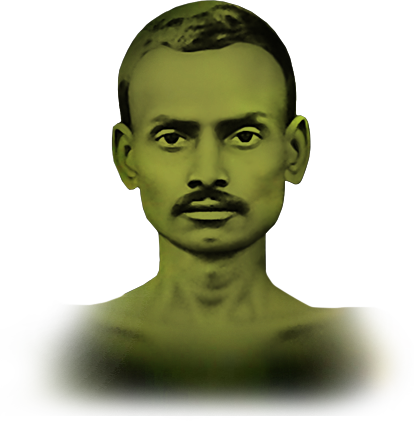

Shrimad Rajchandra
Biography by Adit Shah

Shrimad Rajchandra was the embodiment of compassion and one of the greatest men of the era. Shrimad Rajchandra had exalted the heights of spiritual evolution and attained self-realization. His life blossomed like a lotus, untouched and untainted by the mere worldly responsibilities. Shrimad Rajchandra was a Jain poet, philosopher, scholar and a jewel trader in Mumbai. Spiritual progress was his only goal. Let's get a bird's eye view of the wise, spiritual, and non-violent man's life.
Rajchandraji was born on November 9, 1867 near Morbi, India. Rajchandraji's father's name was Ravjibhai, and his mother's name was Devabai. Rajchandraji was the second oldest out of his six siblings. He had a sharp memory. His family was part of a well-known merchant community. Rajchandraji's mother was brought up in a Jain family. His grandfather was a devotee to Lord Krishna. Rajchandraji could read multiple languages. He was influenced by Jainism and Vaishav, but he was a devotee of Jain religion. Rajchandraji was known as "Kavi", the child scholar poet. At the age of four, Rajchandraji's name was changed to Raichand. On the first day of school, he memorized the multiplication table from one to ten. At the age of seven, while he snuck up in a tree watching his friend die, he saw his past eight hundred births. At the age of eight, Rajchandraji wrote five thousand couplets. At the age of ten, he delivered interesting speeches with great skill. At the age of eleven, he wrote mature articles and published them in the best magazine. At the age of twelve, he made three hundred couplets in three days and wrote a three hundred stanza poem on "a watch".
At the age of thirteen, Rajchandraji started attending his father's shop. From the age of thirteen to sixteen, he delved into his quest for the ultimate truth. He completed seven years of studying for an ordinary person in two years. Once Rajchandraji arranged twelve books in order just by touching them. He was endowed with extraordinary powers of doing one hundred things at once. At the age of twenty, Rajchandraji was married to Jhabakbai. He had two sons and two daughters. At the age of twenty-three, Rajchandraji attained self-realization.
Rajchandraji was a Jain poet, philosopher, scholar, and a jewel trader in Mumbai. He wrote a large number of philosophical poetries including many poems on Indian epics such as Ramayan and Krishna, and one hundred forty-two verses of the "Atma Siddhi Shastra". Rajchandraji also edited an article in newspaper called "Vairagya Vilas", meaning the enjoyment of non-attachment. Rajchandraji studied all the Indian religions, but the one that he was attracted to, was Jainism. He has elaborated the Jain doctrine of karma, and many other categories. He had four devotees that attained self-realization under his refuge. Rajchandraji ignited the flame of enlightenment in monks, scholars, and householders. He was Mahatma Gandhi's spiritual guide. From 1891 to 1901, Gandhiji and Rajchandraji were best friends.
Rajchandraji retired from his household life and business when he was thirty years old. At the age of thirty-four, Rajchandraji caught illness from which he never recovered. Rajchandraji's body grew weaker, and weaker every day after catching illness. The day before Rajchandraji left his body, he told his followers to continue their efforts for self-realization. Rajchandraji left his body on April 9, 1901 in Rajkot, India, at the age of thirty-four.
Rajchandraji was a divine soul of the highest caliber who engaged in constant pursuit of self- purification. He remained constantly focused on the truth and Self. Rajchandraji inspired Mahatma Gandhi to do the same. He had no materialistic ambition of any kind. As if born only to uplift spiritual aspirants and attain self-realization, Rajchandraji led an infinitely fulfilling life.
If you enjoyed reading the biography, please consider donating for COVID relief efforts by SRLC.
Donate Here Kahoot Quiz on Shrimad Rajchandra